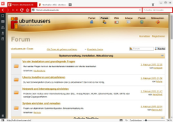
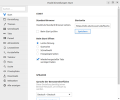
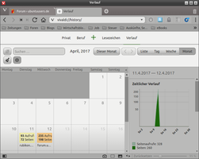

Vivaldi
Dieser Artikel wurde für die folgenden Ubuntu-Versionen getestet:
Ubuntu 16.04 Xenial Xerus
Ubuntu 14.04 Trusty Tahr
Zum Verständnis dieses Artikels sind folgende Seiten hilfreich:
Vivaldi  ist ein für fortgeschrittene Anwender ausgelegter, leichtgewichtiger Browser der Firma Vivaldi Technologies AS, welcher auf die Render-Engine Blink von Chromium setzt. In Zukunft soll dieser alle Funktionen von Opera 12.x beinhalten. Unter anderem ist ein E-Mail-Client in Planung.
ist ein für fortgeschrittene Anwender ausgelegter, leichtgewichtiger Browser der Firma Vivaldi Technologies AS, welcher auf die Render-Engine Blink von Chromium setzt. In Zukunft soll dieser alle Funktionen von Opera 12.x beinhalten. Unter anderem ist ein E-Mail-Client in Planung.
Installation¶

Vivaldi ist kein Bestandteil der offiziellen Paketquellen und muss daher über ein Fremdpaket installiert werden.
Fremdpaket¶
Das Programm kann als DEB-Paket heruntergeladen  und anschließend installiert werden [1].
und anschließend installiert werden [1].
Hinweis!
Fremdpakete können das System gefährden.
Installiert man das Fremdpaket, ist es wichtig zu wissen, dass ein neuer Paketquellen-Eintrag ("Repository") /etc/apt/sources.list.d/vivaldi.list hinzugefügt wird und Vivaldi so automatisch mit neuen Versionen versorgt wird. Der Installationsordner ist mit /opt/vivaldi/ fest vorgegeben.
Des Weiteren wird Vivaldi als systemweiter Standardbrowser gesetzt. Möchte man diese Vorgabe rückgängig machen, verwendet man folgenden Befehl im Terminal [2]:
sudo update-alternatives --config x-www-browser
Weitere Details sind dem Artikel Alternativen-System zu entnehmen.
Verwendung¶
Über den Menüeintrag "Internet -> Vivaldi" kann der Browser bei Ubuntu-Varianten mit einem Anwendungsmenü gestartet werden [3]. Alternativ steht der Befehl vivaldi zur Verfügung.
|  |
| Vivaldi mit Standardthema |
| Panel | |
| Symbol | Beschreibung |
| Lesezeichen verwalten | |
| Downloads | |
| Notizen erstellen und verwalten | |
| + | Web-Paneel hinzufügen |
| Einstellungen vornehmen | |
| Panel ein/ausblenden | |
Startparameter¶
Bestimmte Optionen können direkt beim Programmstart übergeben werden:
/opt/vivaldi/vivaldi --OPTION="..."
Eine Liste möglicher Parameter ist der Übersicht List of Chromium Command Line Switches zu entnehmen.

Einstellungen¶
Das Einstellungsmenü bietet Zugriff auf alle für die einfache und fortgeschrittene Nutzung erforderlichen Einstellungen. Gespeichert wird die Konfiguration im versteckten Ordner ~/.config/vivaldi/ im Homeverzeichnis.
|  |
| Einstellungen |
|  |
| Verlauf |
Sonderwünsche wie z.B. die Einstellungen zur Hardware-Beschleunigung sind über die beiden Pseudo-URLs vivaldi://flags und vivaldi://gpu erreichbar.
Weitergehende Einstellungen erreicht man, indem man in der Adresszeile chrome://settings eingibt (getestet mit Version 1.13). Beim Aufruf ändert sich diese Eingabe zwar selbsttätig in „vivaldi://settings“, der Inhalt des Tabs ist jedoch ein anderer. Neben vielen anderen Optionen lassen sich hier die gespeicherten Passwörter anzeigen und verwalten.
Seit Version 1.8 Version ist eine grafische Auswertung des Browserverlaufs hinzugekommen, aus der man detailliert die Aktivitäten des Tages/der Woche/des Monats ersehen kann.
Suchmaschinen¶
Vivaldi verfügt über die Möglichkeit, durch Rechtsklick in Suchfelder auf Webseiten eine neue Suche anzulegen („Add as Search Engine...“). Das funktioniert nicht mit allen Suchmaschinen, abhängig von der verwendeten Suchmethode. Will man beispielsweise Ixquick oder Startpage aufnehmen, muss man in den Einstellungen Hand anlegen.
Mit vivaldi://settings/search in der Adressleiste kommt man an die Sucheinstellungen. Dort drückt man die Schaltfläche „Neue Suche hinzufügen“ und trägt als URL ein
für Ixquick:
https://www.ixquick.eu/do/search?query=%s&cat=web&pl=chrome&language=deutsch
für Startpage (= Ixquick.com):
https://www.ixquick.com/do/search?query=%s&cat=web&pl=chrome&language=deutsch
Das Feld „URL der Suchvervollständigung“ kann frei bleiben, als „Beschreibung“ und „Kürzel“ trägt man ein, was man als sinnvoll erachtet.
Will man auch die Suchfelder im Ubuntuusers-Forum und im Ubuntusers-Wiki auf diese Weise bereitstellen, dann geht das mit folgenden URLs:
für das Forum:
https://www.ixquick.com/do/search/?cat=web&cmd=process_search&language=deutsch&query=site:forum.ubuntuusers.de %s
für das Wiki:
https://www.ixquick.com/do/search/?cat=web&cmd=process_search&language=deutsch&query=site:wiki.ubuntuusers.de %s
So lässt sich mit Hilfe der dann zu vergebenen Kürzel die entsprechende Suche auf den hiesigen Seiten schnell durchführen.
Erweiterungen¶
Seit Sommer 2015 kann Vivaldi auf Wunsch mit Erweiterungen aus dem Chrome Web Store  angepasst werden. Siehe auch Chromium/Erweiterungen.
angepasst werden. Siehe auch Chromium/Erweiterungen.
Problembehebung¶
Sicherheitsaktualisierungen¶
Sicherheitsaktualisierungen sind immer nur in der neuesten Vivaldi-Version enthalten (ältere Versionen werden nicht gepflegt). Ehemalige Opera-Fans kennen das, aber alle anderen sollten dies zumindest wissen, bevor sie sich für Vivaldi entscheiden.
Flash¶
Wer noch Adobe Flash benötigt, installiert die PPAPI-Version über das Paket adobe-flashplugin wie im genannten Artikel beschrieben.
Java¶
Ein Browser-Plugin für Java ist nicht vorhanden und auch nicht mehr vorgesehen. Java-Applets werden daher nicht mehr unterstützt . Webseiten, die Java Web Start nutzen, sind nicht betroffen und erfordern die Installation einer Java-Laufzeitumgebung (siehe Java/Installation).
Deinstallation¶
Nach dem Deinstallieren über die Paketverwaltung können anschließend einige Verzeichnisse im Homeverzeichnis gelöscht werden. Mit der Eingabe von:
vivaldi:about
in die Adresszeile kann man vor der Deinstallation überprüfen, welche Speicherpfade benutzt und wo die Einstellungen gespeichert wurden.
Verlagerung des Browser-Caches¶
Da ein Browser häufig das meistgenutzte Programm ist, ist es manchmal hilfreich, für den programmeigenen Zwischenspeicher (Cache) eine vorhandene Verzeichnisstruktur vom Typ tmpfs (z.B. /run/shm) oder eine vorher eingerichtete RAM-Disk zu nutzen. Dies verringert die Schreibzugriffe auf das verwendete Speichermedium bzw. verlagert diese in den schneller verfügbaren Arbeitsspeicher.
Analog zum Browser Chromium ist die Verlagerung auch für Vivaldi sehr schnell erledigt. Dazu gibt man beim Programmstart z.B. die Option --disk-cache-dir="/run/shm/vivaldi" mit. Nach einem Neustart des Browsers wird der Cache in den Arbeitsspeicher verlagert und beim Herunterfahren des Rechners automatisch gelöscht. Überprüfen kann man dies, indem man den Ordner /run/shm/ vor und nach der Nutzung von Vivaldi kontrolliert.
Proxy¶
Die Einrichtung eines Proxys ist nicht über die Einstellungen, sondern nur über Startparameter möglich (Stand: November 2016).
Tabgruppen umbenennen¶
In der Version 1.6 Stable wurde als neue Funktion die Möglichkeit eingeführt, Tabgruppen umzubenennen. Die deutsche Lokalisierung des Menüs weist jedoch einen Fehler auf, der dies verhindert. Durch eine Änderung der Menüeinträge in der Datei messages.json lässt sich dieser Fehler wie folgt beheben:
Suchen nach:
"_82_ename_32__84_ab_32__83_tack0":{"message":"Versetze Tabgruppe in den Ruhemodus"und ersetzen durch:
"_82_ename_32__84_ab_32__83_tack0":{"message":"Tabgruppe umbenennen"},Suchen nach:
"_65_llow_32__84_ab_32__83_tack_32__82_enaming0":{"message":"Tabgruppen"},und ersetzen durch:
"_65_llow_32__84_ab_32__83_tack_32__82_enaming0":{"message":"Tabgruppen umbenennen"},
Alternativ kann man die gepatchte Datei messages.json auch herunterladen werden. Die heruntergeladene Datei muss zunächst dem Besitzer root zugewiesen und anschließend in den betreffenden Ordner kopiert werden:
sudo chown root:root messages.json sudo cp messages.json /opt/vivaldi/resources/vivaldi/_locales/de
Stand: 17.12.2016; 1.6.689.34 (Stable channel) (64-Bit); Quelle
Links¶
Erste Beta-Version des Browsers Vivaldi veröffentlicht
- Blogbeitrag, 11/2015Vivaldi 1.0 ist da
- Blogbeitrag, 04/2016Webbrowser Vivaldi 1.0 ist fertig
- heise News, 04/2016Vivaldi: Ehemaliger Opera-Chef zeigt neuen Web-Browser
- heise News, 01/2015Die Erben von Opera
- Blogbeitrag, 01/2014Webbrowser
 Programmübersicht
Programmübersicht
- Erstellt mit Inyoka
-
 2004 – 2017 ubuntuusers.de • Einige Rechte vorbehalten
2004 – 2017 ubuntuusers.de • Einige Rechte vorbehalten
Lizenz • Kontakt • Datenschutz • Impressum • Serverstatus -
Serverhousing gespendet von